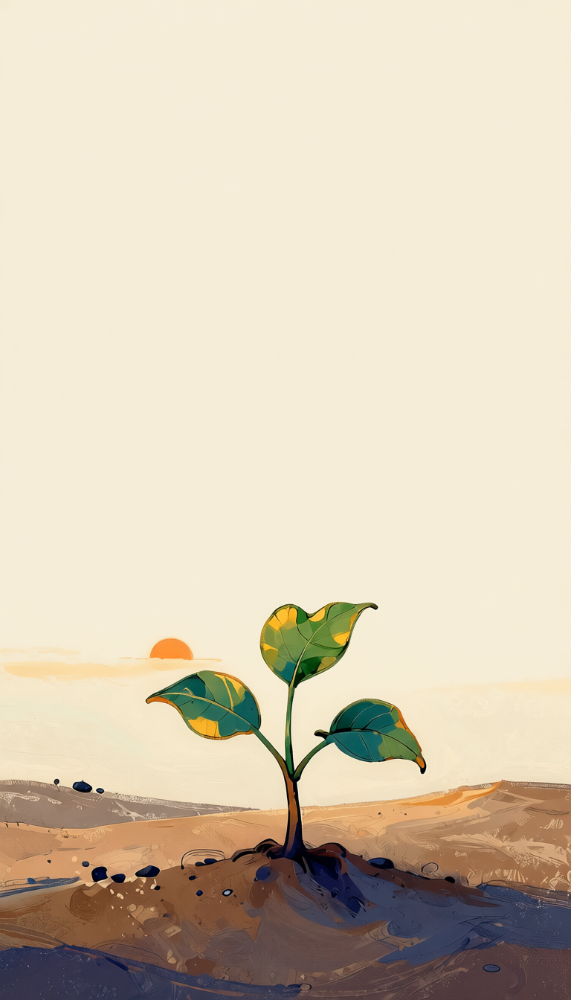

Learn
Short lessons introduce the Four Noble Truths, the Noble Eightfold Path, the Threefold Training, and other core Buddhist teachings.
Bite-sized Buddhist practice
A quiet companion for learning the Buddha's teaching one clear lesson at a time.

Short lessons introduce the Four Noble Truths, the Noble Eightfold Path, the Threefold Training, and other core Buddhist teachings.
Guided meditation and quiet free-sit practice help the teaching move from idea to attention.
A private journal gives you room to write what you noticed. No account required.
What is inside
BuddhaBits is built for people who want substance without pressure: no leaderboards, no shame loops, no generic wellness promises.
App Store
BuddhaBits is available for iPhone on the App Store. The app has no ads, no required account, and no paid lesson content.
Explore the app on the App Store.
App Store ↗